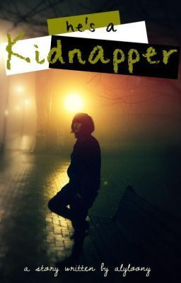

"He's a kidnapper"
***
Halos lumabas ang puso ko sa sobrang kaba habang nandito ako sa isang van kasama ang limang lalaki na nakatakip ang mukha. Nakatali ang mga braso at biniti ko habang ang bibig ko naman ay may tapal para hindi ako makasigaw.
Wala akong ibang ginawa kundi ang tahimik na umiyak habang wala akong kasiguraduhan kung saan ako dadalhin at kung ano ang gagawin saakin ng mga lalaking ito.
Natatakot ako. Baka mamaya gahasain nila ako at itapon na lang nila basta ang bangkay ko kung saan. Madaming masamang bagay ang naglalaro sa isipan ko ngayon.
God please save me.
Napapikit na lang ako sa sobrang takot habang patuloy na tumutulo ang mga luha sa mata ko.
Ramdam na ramdam ko ang bilis ng tibok ng puso ko habang patuloy ang panginginig ng katawan ko sa sobrang takot.
Parang kanina lang ang saya-saya ko. Nasa birthday party ako ng kaklase ko at masaya kaming nagtatawanan. Kung alam ko lang na ganito ang kahihinatnan ko sana pumayag na kong mag overnight stay sa kanila.
Gusto ko ng makauwi saamin. Sana, sana may magligtas saakin. Sana makatakas ako sa kanila. Ayoko na dito, natatakot ako...
Naramdaman ko ang isang kamay na pumatong sa kamay ko at hinawakan ito ng mahigpit. Napadilat ako at napatingin doon sa lalaking katabi ko na kasamang dumukot saakin.
Tinignan niya ako sa mata
"sorry ha? Wag ka matakot di ka naman namin sasaktan eh. Kailangan lang namin ng pera. Maniwala ka saakin"
Bigla na lang ako napatigil sa pag iyak ng matitigan ko ang mata ng lalaking ito at marinig ko ang boses niya.
Ang mga mata na yun, ang mga tingin, pati ang boses niya.
Kaparehong kapareho doon sa isang taong kilala ko.
Isang taong tinitignan ko lang mula sa malayo
Kaparehong kapareho doon sa taong mahal ko.
***
Chapter 1
*Warning*
"Skye it's your turn. Show me your talent"
I smile at my dance instructor then I stood up and stepped in front of the class. The moment she turned on the music, my body automatically dance into the rhythm. I showed them how good and graceful I am. I dance like I own the music, and feel like I am a dance goddess. I got a glimpse of my classmates with their envious eyes on me and that made me smile. Of course, I am great. Bata pa lang ako, nagsasayaw na ako. Dancing is my life and talagang naghirap ako para maging ganitong kagaling.
After the music stopped, I gave them my signature bow then I heard a round of applause
"perfect! You're really a daughter of Shelina Oler Bernardo!" my professor said
I gave her a proud smile. Of course, I am Skye Bernardo, the daughter of Kris Bernardo and Shelina Oler Bernardo. My dad is an entrepreneur and we own 5 restaurants here in Philippines and two five star hotels. My mom is a retired prima ballerina pero sikat siya nung kapanahunan niya. Sa ngayon, I am a 17 years old college girl taking up theater and performing arts. I can sing and act pero ang pinaka gusto ko talaga ay ang pagsasayaw like my mom. Yung pag kanta ko naman ay nakuha ko kay dad. Kahit pa mukha siyang seryosong business man, pag nakahawak na yan ng mic naku, di niyo na siya mapipigilan sa pag kanta.
Well I guess I am just blessed having a talented and lovable parents. Same goes with my friends. Sa mundong to parang ang hirap maghanap ng totoo pero isa ako sa mapalad na nakahanap ng ganung klaseng mga kaibigan.
"hey Skye!" nakita kong may kumakaway saakin na babae sa may entrance ng Dance studio.
That's Arly Lee, one of my besties. Half-chinese siya and she's 2 years older than me though we are both second year college student. Dati kasi medicine ang course na kinuha niya dahil narin sa family niya. Pareho kasing doctor ang parents niya and they owned a hospital at siya ang magmamana noon in the future kaso talagang wala ang interest niya sa medicine. Lagi na lang niyang bagsak sa karamihan ng mga subjects niya. Though pinilit parin niya magpatuloy nun dahil di rin naman niya alam ang gagawin niya sa buhay. Kaso dahil wala nga siyang interest sa pag do-doctor, palagi na lang siyang nagpapanggap na masakit ang ulo, ang tyan at kung anu-ano pa para lang ma-excuse sa klase. And swear, lagi niyang naiisahan ang mga professors niya dahil award winning naman talaga ang pag arte niya to the point na kahit sino mapapaniwala niya. At doon niya nakita ang tunay niyang talent, ang acting. Kaya ngayon isa narin siyang theater arts student tulad ko though acting ang forte niya.
"Arly! Matagal ka ba nag antay?"
"not really. Come on, iniintay na tayo ni Charm"
Sabay kaming naglakad ni Arly papuntang cafeteria at nakita naman namin doon si Charm na nagaantay saamin.
"here!" Charm waved at us them lumapit kami sa kinalulugaran niya "what took you so long?" tanong niya saamin pagkatapos ibinalik niya yung tingin niya sa laptop niya.
She's Charm Watson. Her dad is half British while her mom is a pure Filipina. Her family owns one of the biggest telephone company in the country. Now, she's taking up Technical engineering. Saamin tatlo, siya ang full package dito. Beauty + brain + money = Charm Watson. Though kahit ganyan yan, super down to earth kaya naman pinagpala yan ng isang napaka gwapo at napaka gentleman na boyfriend.
"Sorry if we keep you waiting. Medyo natagalan yung dance class kanina"
"oh it's alright. Actually tama lang ang timing mo" nginitian ako ni Charm then tumingin siya sa kabilang direction. Napatingin din naman ako doon sa tinitignan niya at halos lumabas ang puso ko sa sobrang bilis ng pag tibok nito ng makita ko yung tinitignan ni Charm.
Si Dash Esguerra, yung taong matagal ko ng gusto.
But sad to say, he doesn't know my very own existence.
"oh my, your Prince Charming is here, Skye" bulong saakin ni Arly.
Sinundan ko ng tingin si Dash mula sa pagkakapasok niya sa loob ng cafeteria, pag punta sa counter para bumili ng pagkain niya at pag upo niya sa isang table katabi ng bintana.
"oh my" I looked at Charm Arly "I think he's alone. Kawawa naman siya"
Bigla naman akong nginitian ng dalawa and that made me shiver all over. Alam niyo yung pakiramdam na may binabalak na masama ang mga kaibigan mo sayo?
"it's your chance Skye" sabi saakin ni Arly
"huh? Chance? Na ano?"
Napapalo naman si Charm sa ulo "naku Skye ang slow mo!"
"ay sorry naman! Ikaw na matalino" I rolled my eyes on her in a playful way
Bigla naman ako hinila palapit nung dalawa tsaka ako binulungan "buy your food then afterwards ask him kung pwede ka maki-share sa kanya ng table" sabi ni Charm
"but, nahihiya ako"
"si Skye Bernardo? Nahihiya? Hello, eh number one ka sa mga ganyang bagay. What's with Dash ba na pag dating sa kanya eh natitiklop ka?" tanong ni Arly
Tinignan ko si Dash mula sa malayo then naramdaman ko na nanaman yung kakaibang pakiramdam kada tinitignan ko siya "he's just different"
"he's still a guy. I know he will fall head over heels on your beauty. At kung di ka pa niya mapansin-pansin eh gumawa ka na ng paraan para mapansin ka niya kaya ano ka ba! Kung gusto mong maging happily ever after ang fairy tale niyong dalawa eh kumilos kilos ka na!" sabi ni Charm
Ibinalik ko ulit ang tingin ko kay Dash. Siguro tama sila. Actually I'm very good at handling boys. Ewan ko nga ba kung bakit pagdating sa kanya eh natitiklop ako. Pero talagang gustong gusto ko si Dash.
Bukod sa gwapo siya eh parang may something sa kanya na naghahatak papalapit saakin. Madami naman gwapo sa school namin pero talagang sa kanya lang ako naattract ng ganito. Kahit sabihin pa nating mukha siyang suplado at napaka misteryoso ng pagkatao niya.
Ginawa ko ang sinabi nila Arly and Charm. Bumili na ako ng lunch ko at dahan-dahan akong naglakad sa kinalulugaran ni Dash habang patuloy ang pagtibok ng puson ko ng malakas.
Oh gosh Skye, what's happening to you? You're good at flirting pero bakit ka ninenerbyos ng ganto? Ok I need to relax. Kaya ko to. Tatabi lang naman ako sa kanya, wala naman ka-kaba kaba doon eh.
Huminga ako ng malalim at taas noo akong lumapit kay Dash looking oh-so confident while deep inside gusto nanginginig ako sa sobrang kaba at kilig.
"uhmm excuse me" sabi ko sa kanya kaya naman napatigil siya sa pagkain at tinignan ako. I gave him my most sweetest smile "can I sit here?" tanong ko habang tinuturo ko yung vacant seat sa tabi niya.
Tinigan niya lang ako na parang nagtataka. Oh for Pete's sake sumagot ka na Dash before ko pang maibagsak yung tray dahil nakakatunaw yang tingin mo. My gash!
"why?" tanong niya saakin.
Oh my oh my oh my. Ngayon ko lang siya narinig magsalita at wow he has a very masculine voice like what I've expected! Nakakainlove!
Pero ano daw sabi niya?
"a-ano?"
"I said why?"
"h-huh? Ahmm I-I cannot find any vacant seat"
"I see. That's weird. You usually seat with your friends, bakit hindi ka sa kanila nakitable ngayon?" sabi niya saakin sabay tingin sa direction nina Charm and Arly.
Naku po! Patay.
"uhmm k-kasi-"
"DASH!" napahinto ako sa pagsasalita ng biglang may sumulpot na lalaki sa likuran ko then inoccupy niya yung upuan na dapat uupuan ko "kumain ka na pala di mo manlang ako niyaya!"
"sorry, kala ko busy ka pa kanina" binalik ni Dash yung tingin niya saakin "sorry Miss, may nakaupo na eh" sabi niya sabay turo doon sa lalaki
Tumango lang ako "alright" after that bumalik na ako sa kinalulugaran namin ng mga kaibigan ko.
Unang beses kong nakausap si Dash, pahiya agad ako. T____T
"huwaaaaaaaaaa nakakahiya! Nakakahiya! Ayoko ng mabuhay, hindi ko na kaya to! Masakit eh! huhuhuhu!" T____T
Hinimas himas ni Arly yung likod ko "ok lang yan best friend! Kaya mo yan! Mag move on ka na lang at humanap ng bagong Prince Charming! Madami namang gwapo dito na marunong mag appreciate ng magaganda"
"hindi ko kayaaaaaa! Hindeeeeeeee!"
"hay naku Skye, wag ng O.A ok? Parang yun lang"
Hinarap ko si Charm "you're so mean! Palibahasa may gwapo, gentleman at loyal kang boyfriend! Hindi mo alam ang pakiramdam ko! Huhuhuhu" T_____T
"well, proud ako sa boyfriend ko no pero ano ka ba Skye tigilan mo nga yan. Hindi mo ba naisip, baka interested din sayo si Dash"
"interested your face! Eh kita mo nga na ni-hindi niya ako pinaupo sa tabi niya eh" >__<
"pero sabi mo di ba tinanong niya kung bakit di ka saamin tumabi?"
I pout "ano naman connection ng tanong niya?"
"can't you see? Alam niyang kaibigan mo kami! Alam niyang lagi tayong magkakasama kumain! Ibig sabihin lagi siyang nakatingin sayo! Maybe he likes you too, talagang torpe lang siya kaya ganun ang pakikitungo niya sayo!"
Napatigil ako bigla sa sinabi ni Charm and parang nagevaporate lahat ng kahihiyan na nararamdaman ko.
She's right! Hindi naman madalas kumain si Dash sa cafeteria pero paano niya nalaman na lagi kong kasama si Charm at Arly? Hindi rin naman kami magkaklase kasi education student siya at isa pa minsan lang pagtagpuin ang mga landas namin sa school! Pero bakit alam niya ang mga bagay na yun? Hindi kaya simpleng stalker ko din siya tulad ng pagiging stalker ko sa kanya?
Oh my! Kinikilig ako!
Napayakap ako kay Charm "I'm so lucky to have a genius bestie!" I told her
Nakiyakap rin si Arly kay Charm "correction, we are so lucky! Not just you Skye! Kaya Charm, patulong naman sa assignment ko sa Statistic. Numbers are making me crazy."
The three of us laugh.
"hay naku girls, bago muna ang lahat don't forget sa Saturday ha? Wag na wag kayong mawawala sa birthday ko or else itatakwil ko na kayo" sabi ni Charm
"of course dear we will be there. Prepare your self para sa gift ko sayo" I told her
"I am looking forward to it" she grinned
Hay, dito pa lang sa dalawang to masaya na ako pero mas sasaya ako kung tama ang hinala namin na may gusto din saakin si Dash.
The next day, maaga akong pumasok sa school dahil inassign kami ng dance instructor namin na turuan ang isang class ng ibang college ng ballroom dance. May culminating activity kasi sila sa P.E nila and kakailanganin nila ng magtuturo dahil isasali sila sa dance fair. Hindi naman sapilitan pero may extra credit pag sumama kami. Masaya rin naman ako pag may natuturuan akong ibang tao kaya pumayag narin ako.
A few minutes after kong dumating, pumasok narin yung dance instructor namin.
"class, I want to introduce you to each and every one" tumingin siya sa side namin then tinuro niya yung mga taga ibang college "ok class they are from education college" sa kanila naman siya tumingin "and on the other side, they are from theater and performing arts college. Sa ngayon ippair ko muna kayo edu students sa ating mga dancers para mas makasunod kayo ng husto. By height ang partnering so please stand up everyone and fall in line according to your height"
Sumunod naman kami sa sinabi nung dance instructor and pumila kami.
"Skye come here" tawag saakin nung dance instructor kaya naman umalis ako sa pila
"yes ma'am?"
"I need you para mas mapakita ko yung dance step. Tayo muna ang pair"
"oh, ok po"
I smile.
Aware ako na sa klaseng ito, ako ang favorite ni Ma'am Mila. Well hindi sa pagmamayabang pero marami na kasi talagang nagsasabi saakin na kakaiba ang potential na pinakikita ko. Of course paano ba namang hindi? Eversince I was a kid, lagi akong sumasama kay mom kada may dance rehersal siya. At the age of 8 siya mismo ang nagturo saakin paano mag ballet. Then after a year, mas pinalawak ko pa ang knowledge ko sa lahat ng klase ng mga sayaw.
Nag start na ang dance lesson. Madali lang naman yung mga routine na ginagawa namin. Simpleng swing lang na sayaw with the tune of Sway ng Pussycat Dolls. Madali rin naman nakakasunod yung mga edu students siguro dahil natuturuan din sila ng maayos ng mga dance partners nila.
"ok very good!" sabi ni Ma'am Mila nung matapos naming yung pang third routine "our next routine is-"
"sorry I'm late"
Napatingin kami lahat doon sa latecomer at halos malaglag ang puso ko ng makita ko Dash.
Oh my. Don't tell me kasama namin siya mag practice?! O///O
"next time hijo pag na late ka hindi na kita pasasalihin. I don't want any late comers in my class"
"yes ma'am I'm sorry" he told her, expressionless
"ok, Skye partner-an mo siya"
Napatingin naman ako kay Ma'am "a-ako po?"
"yes ikaw. Dito kayo pumwesto sa harapan para may guide sila"
Lumapit saakin si Dash at parang biglang tumigil ang mundo ko.
Oh no, nangyayari ba talaga to? Hindi to panaginip? Makakapartner ko siya sa sayaw. Ballroom to be exact. Can I die now? Ay wag muna pala, tsaka na pag tumanda na ko kasama ang lalaking to. Wahahah pero my gosh, I feel so lucky right now!
"ok back to step one! Hold your partners!"
Napalunok ako bigla sa sinabi ni Ma'am Mila. Hold your partners daw! Shocks! Mahahawakan ko kamay niya!
Tinignan ko siya and I was shock nung nakita kong inooffer na niya ang kamay niya saakin.
"hold your partners hands daw" sabi niya saakin ng seryosong seryoso
"h-ha? Ah o-oo" inilagay ko yung palad ko sa ibabaw ng palad niya at feeling ko parang nakuryente yung buong katawan ko.
Ganito ba ang feeling ng first time mong mahawakan ang kamay ng taong matagal mo ng gusto? My God, this is so good to be true. Sana hindi ako nananaginip! Sana hindi! Alam kong hindi to panaginip! Nahahawakan ko talaga ang kamay niya. Oh my. Oh my-
"Skye!"
Bigla akong natauhan at nakita ko si Ma'am Mila pati narin yung iba pang dancers na nakatingin saakin
"y-yes ma'am?"
"kanina ko pa inistart ang music hindi ka gumagalaw diyan. Please focus"
"s-sorry po!"
Nakakahiya! >____________<
Nagstart ulit yung first routine and I try my best para wag magkamali kahit nanginginig ako. Eto ang unang beses na nadistract ako ng ganito! Eh paano ba namang hindi, kung kapartner mo ba naman ang gusto mo di ba?
Pero kung hawak pa lang ng kamay nadistract na ko, what more young second routine.
Sa second routine maghaharapan kami and the moment na humarap ako kay Dash, feeling ko matutunaw ako.
Seryoso parin ang mukha niya and pero titig na titig siya saakin. Kinuha niya yung kamay ko then inilapit niya ako sa kanya. He put his arms around my waist and napalunok ako bigla.
t-teka ano to? Ano ibig sabihin nito?
"tama ba ang position ko?" tanong niya saakin habang di parin niya inaalis ang pagkakatitig sa mata ko ng seryoso
"ah o-oo t-tama"
Ginawa namin yung second routine and nagkakamali mali na ko ng mga steps nun. Naapakan ko narin ang paa ni Dash pero hindi siya nagrereact. Nakatingin parin siya saakin ng seryoso.
Halo-halo na sigurong emosyon ang naramdaman ko. Kaba, takot at kilig.
Yung tingin niya parang may gusto siyang ipahiwatig saakin pero hindi ko alam kung ano. Alam kong important ang eye contact sa pagsasayaw pero yung tingin niya kasi kakaiba eh. At sa hindi ko malamang kadahilanan, para akong biglang kinabahan. But at the same time, hindi ko rin maialis ang tingin ko sa lalaking to. Ramdam ko ang sobrang pagkailang pero mukhang nag glue na ata ang mata ko sa mata ng lalaking to dahil hindi ko ito magawang maibaba.
Pero ang mas ikinagulat ko, biglang inalis ni Dash ang pagkakahawak niya sa bewang ko atsaka niya hinawakan ang pisngi ko using the back of his hand. Agad din naman niya itong ibinaba tapos hinila niya ako papalapit sa kanya atsaka ako niyakap ng mahigpit.
"t-teka"
"Skye" parang biglang nagtayuan ang balahibo sa katawan ko ng sabihin niya ang pangalan ko "are you going out this Saturday?"
Nagulat naman ako sa tanong niya. Out of the blue bigla niya tatanungin yun to think nasa gitna kami ng practice at hindi kasama sa routine itong ginagawa namin.
Wait, is he asking me on a date?! Huwaaaaaaaaaaaaa totoo ba to?! Kinikilig ako! My gosh! This is so good to be true!
Pero teka aalis ako ng Saturday eh! Birthday yun ni Charm! >___<
"uhmm y-yes, birthday ng kaibigan ko eh. But I'm free this Sunday" sagot ko sa kanya
"mas maganda kung di ka pupunta"
Natigilan ulit ako sa sinabi niya "h-ha?"
Humiwalay siya ng pagkakayakap saakin at tinignan ulit ako sa mata na para bang may gusto na naman siya ipahiwatig then bigla niyang inalis ang tingin niya saakin atsaka tumingin kay Ma'am Mila
"ma'am I think Skye is sick. Kanina pa siya nagkakamali eh. And also, I need to go" bigla naman siyang tumalikod saamin then naglakad palabas
"wait Mr. Esguerra!" tawag ni ma'am kaso hindi siya pinansin kaya tumingin siya saakin "are you alright?"
"ah opo ma'am"
Tinignan ko likod ni Dash habang naglalakad siya palayo.
Ok, what was that?
Chapter 2
*Unfortunate Night*
Lunch break...
"I'm hungry, grabe naman kasi yung pinagawa saamin ni direk kanina. Pinaluha talaga kami ng bongga" sabi ni Arly habang naglalakad kami papuntang cafeteria
"kaya pala mugto ang mata mo" sabi naman ni Charm habang hindi inaalis ang mga tingin niya doon sa Ipad niya
"hay ang hirap talaga maging artista! Pero mas mahirap humanap ng boyfriend" sabi ni Arly "buti ka pa Charm at masaya sa boyfriend mo"
Ngumiti lang si Charm kay Arly "sagutin mo na kasi yung model na nanliligaw sayo"
"hmm pagiisipan ko" bigla ako kinalabit ni Arly "ikaw naman Skye, bat kanina ka pa tahimik diyan?"
Di ko sila pinansin at nagbuntong hininga lang ako. Hindi pumasok ngayon si Dash doon sa practice namin ng sayaw. Sabi ni Ma'am Mila hindi na daw sasali si Dash. Bakit kaya? Dahil kaya saakin? Pero ano naman ang ginawa ko sa kanya?
Naalala ko bigla yung mga titig ni Dash saakin nung nag papractice kami pati narin yung paghawak niya sa kamay ko, sa bewang ko pati narin sa pisngi ko. Tapos yung boses niya nung tinawag niya ang pangalan ko.
Napahawak ako sa pisngi ko at di ko maitago ang malalapad na ngiti sa mukha ko. Oh my, kinikilig talaga ako kada maalala ko yun! Bat ba kasi ang gwapo gwapo ni Dash? Tapos ang ganda pa ng mata niya, na talagang nakakatunaw naman pag tinititigan niya ko. Isa pa yung boses niya nakakainlove specially nung sinabi niya ang napakaganda kong pangalan. Uwaaaaa kinikilig na talaga ako.
"I think Skye's brain is already in outerspace"
Natauhan naman ako ng makita ko si Charm at Arly na nakatitig saakin habang nakataas ang mga kilay nila
"ano, nakabalik na ba ang brain mo Skye?" tanong ni Arly
"kayo naman oh! Sorry na hindi ko lang talaga makalimutan yung nangyari kahapon. Alam niyo yung hanggang ngayon eh abot sa kasukdulan ang pagkakilig ko?" napahinga ako ng malalim sabay ngiti "hay ang gwapo talaga niya" naglakad naman ako patalikod habang nakatingin kina Charm at Arly "ang sarap talaga mainlo---ouch!"
Napahinto ako sa paglalakad ng bigla akong bumangga sa pader este sa dibdib ng isang tao. Hinarap ko ito
"oh my, I'm sorr---Dash?!"
Tinitigan ako ni Dash ng seryoso. Napalunok naman ako bigla. Kanina pa ba siya diyan? Narinig kaya niya yung mga sinabi ko? Naku naman nahihiya ako >___<
"Skye.."
Halos tumigil ang paghinga ko ng sabihin niya pangalan ko. Ano bang meron sa lalaking to at boses pa lang niya eh pamatay na?
"w-w-w-why?"
Nagulat ako ng bigla niyang hawakan ang kamay ko "pwede ka bang sumabay saakin mag lunch?"
"h-ha?"
Hindi ako nagkakamali ng dinig di ba? hindi di ba? totoo to no? totoo di ba?
"come and eat lunch with me please?" tinitigan niya ang mata ko and he gave me a pleading look.
"Ah!" napaharap naman kami bigla kay Arly ng sumigaw siya "I feel like eating outside the school. Ikaw ba Charm?"
"huh? Ah yeah me too" tinignan ako nung dalawa "Skye sumama ka na muna sa kanya ok? Kakain lang kami sa labas" sabi ni Charm tapos they both gave me a meaningful smile sabay takbo palayo saamin
*sniff* mga tunay talaga kayong kaibigan. Alam na alam niyo kung kelan kayo dapat mag disappear!
"so, let's go?" sabi ni Dash
"ha? s-sure"
Hindi binitawan ni Dash ang kamay ko instead sabay kaming naglakad papuntang cafeteria habang magka holding hands.
Ano ba to? Papatayin ata ako ni Dash sa kilig eh >///<
Teka, baka naman magtatapat na siya saakin ngayon kaya niya ko niyaya? Baka aaminin na niya saakin na may gusto siya saakin? Oh my gosh, ano irereact ko? Oh my, eto na ba to? As in ito na ang moment na hinihintay ko?
Uwaaaaaaa mukhang by the end of the day, in a relationship na ang status ko XD
Umorder na kami ng pagkain ni Dash tapos pumwesto kami doon sa table tabi ng bintana. Pagkaupong pagkaupo namin, tumingin agad siya sa labas ng bintana
"uhmm gusto mo palagi dito pumwesto no?" tanong ko sa kanya to start our conversation. Kanina pa kasi to di naimik. Nakahawak lang sa kamay ko, tapos nung nakarating na kami sa loob ng cafeteria binitawan naman agad.
Tinignan niya ako "tahimik kasi sa pwestong to" sabi niya saakin ng seryosong seryoso.
Hindi ba siya marunong ngumiti? =__=
"o-oh I see"
Yumuko na lang ako at nagstart ng kumain. Hindi narin naman ako pinansin ni Dash nun at nag simula na siya kumain.
Seriously, bakit ba niya ko niyayang sumabay sa kanya pero hindi naman niya ko pinapansin dito?
Or baka naman kumukuha lang ng tyempo? Bwahahaha. Syempre nahihiya pa siguro siya at iniisip pa maigi kung ano ang sasabihin niya saakin.
Pwede namang simpleng "Skye, I like you" eh. To talagang si Dash bwahaha ineexcite ako eh!
"Skye.."
Napaangat bigla ang ulo ko dahil sa sobrang gulat ng banggitin niya ang pangalan ko. Nakita kong nakatitig siya saakin.
Naku po, eto na nga!
"b-bakit?"
Huminga siya ng malalim. Eto na, bumibwelo na siya! waaaaaaaaah
"Skye.."
"hmm?"
"talaga bang aalis ka this Saturday night?"
Eh? ano daw?
Akala ko magtatapat na. Ano ba kasing meron sa sabado ha?! >___<
"Oo, debut ng kaibigan ko. Ano ba kasi meron?"
"talagang pupunta ka?" seryosong seryoso niyang tanong saakin
Err gusto ba ko yayain nito makipag date? Pero bakit naman kasi bawal ng ibang araw?! Pwede naman ngayon di ba? >__<
"kailangan ko pumunta"
Nagbuntong hininga si Dash at tinitigan ako ng seryoso
"alam mo ba ang wish ko?"
"a-alin?"
"sana bumagyo ng malakas sa Sabado at hindi matuloy yung debut ng kaibigan mo"
Nagulat naman ako sa sinabi niya "that's not very nice Dash. Bakit ba kasi?"
Hindi niya ako pinansin at binalik niya ang tingin niya doon sa pagkain niya.
Ano ba talagang problema ng isang to? He's acting so weird. At ano bang meron sa Sabado? Feeling ko hindi lang basta gusto niya akong yayain makipag date eh. I think there's a bigger reason. At pakiramdam ko dapat making ako sa kanya.
Pero I cannot let Charm down. Debut niya yun and she's expecting me to be there.
Tinignan ko ulit si Dash at halos malaglag ako sa kinauupuan ko ng makita kong titig na titig siya sa mukha ko.
"D-dash, i-is there any problem?"
Tumayo siya sa kinauupuan niya and he bend forward hanggang sa magkalapit ang mukha namin. Hindi niya inalis ang titig niya sa mata ko
Oh my, i-is he trying to kiss me? Uwaaaaa di pa siya nagtatapat eh bakit kiss agad?
Pero well sabi nga nila, kung hindi na kayang ipahiwatig sa salita, edi ipapahiwatig na lang sa gawa. At ang paghalik saakin ang gagawin niyang pagpapahiwatig sa nararamdaman niya.
Uwaaaaaaaaa
Napapikit na lang ako habang iniintay ko ang malalambot niyang labi na dumampi saakin. At ayun nga naramdaman kong may dumapi sa labi ko
Pero hindi to labi kundi mga daliri.
"may kanin"
Napadilat ako bigla at nakita kong nakabalik na sa upuan si Dash habang pinapakita saakin yung butil ng kanin na nakuha niya sa labi ko.
"ah s-salamat"
Pinunasan ko naman yung bibig ko ng napkin habang ramdam ko ang pag inti ng mukha ko.
Ampupu nakakahiya >___<
*sigh*
"hey Skye-high, nakakailang bugtong hininga ka na" sabi ni Charm saakin habang nakasilip siya doon sa may dressing room at sinusukat yung gown niya.
Nandito kami ngayon sa boutique kung saan pinagawa yung gown ni Charm para sa debut niya pati narin yung mga gowns ng magsasayaw sa cotillion niya. Kasama kami ni Arly doon kaya naman sumabay na kami sa pagkuha ng gown niya.
"hay eh kasi naman major pahiya ako kay Dash kanina no"
Lumapit saakin si Arly at inakbayan ako "ano ka ba sis, hindi yan no. sa totoo lang nakakakilig nga yung ginawa ni Dash sayo eh."
"pero hindi naman niya ko kinausap"
"baka naman nahihiya lang sayo" sigaw ni Charm mula sa loob ng dressing room
Mukha naman siyang di nahihiya kung makatitig yun. Pero ang talagang pinagtataka ko eh bakit ayaw niya ko paalisin sa sabado? Ano ba kasi talaga ang meron?
Kung sundin ko na lang kaya siya? pero ano naman ang idadahilan ko kay Charm?
"bagay ba saakin?"
Napatingin kami ni Arly kay Charm na kalalabas pa lang sa dressing room at suot suot ang gown niya.
"oh my gosh" me and Arly gasped
"Charm, ang ganda ganda mo diyan sa gown mo!" sabi ko sa kanya at nilapitan ko siya. Umikot naman siya para mas maipakita saamin maigi yung gown.
"talaga?"
"naku girl, mas maiinlove ang boyfriend mo sayo diyan" sabi naman ni Arly
Ngumiti si Charm "excited na talaga ako. Ang tagal tagal ko to pinaghandaan. For the first time, hindi lab-gown ang suot suot ko" lumapit si Charm saaming dalawa ni Arly "you two should be there ok? Walang mawawala ha? I want my two most important besties to be there kung hindi talagang hindi kumpleto ang gabi ko"
"oo naman no bruha! Tinanggihan ko nga yung isang commercial shoot offer para lang makapunta sa debut mo. Ganyan kita kamahal" sabi ni Arly
"oww na-touch naman ako doon" tumingin saakin si Charm "how about you Skye? you'll come right? please sya that you'll come
Hay, hindi ko kayang tiisin si Charm. Isa pa kitang kita ko na masaya siya ngayon. Dapat hindi ko na intindihin yung mga sinabi ni Dash. I need to attend no matter what.
Nginitian ko si Charm "of course I will"
Friday afternoon, maaga akong umuwi para bilhin yung regalo ko kay Charm. May nakita kasi akong cute na cute na dress sa mall at alam kong babagay sa kanya yun. Mga bandang 7 narin nung matapos akong mamili. Tinawagan naman ako ni mommy at sinabi niyang pinasundo niya na ako sa driver namin dahil medyo malakas narin ang ulan.
Lumabas ako sa mall papunta doon sa may parking lot. Hay talaga tong si manong oh, ang hilig mag park sa malalayo. Naka heels pa naman ako ngayon >__<
Habang naglalakad ako papunta sa parking lot, nagulat ako ng makita ko si Dash na nakaupo sa may bangketa at basang basa sa ulan. Ni-hindi manlang niya naisipang sumilong para hindi mabasa. Pero ang mas ikinagulat ko ay nung makita ko ang expression sa mukha niya.
Parang may dinadala siyang malaking problema. And I am aware, umiiyak siya.
Pero bakit? Ano kayang problema niya?
Gusto ko siyang lapitan at icomfort pero hindi ko alam kung paano. Wala akong idea sa kung ano ang problema niya at mas lalong hindi naman kami gaanong close.
But still...
Huminga ako ng malalim at nilapitan ko si Dash. Inilapag ko yung payong sa may balikat niya para hindi na siya maulanan. Napatingin naman siya bigla saakin
"Skye"
Nginitian ko siya "mahirap magkasakit ngayon lalo na madaming activities sa school"
Napatayo naman si Dash bigla at itinapat saakin yung payong "ano ba iniisip mo? Bakit mo itinapat saakin yung payong? Mababasa ka!"
"ok lang, nandun lang naman yung kotse namin sa di kalayuan. Sayo na yan"
"pero..."
"ayos lang" nginitian ko siya at nag wave na ko sa kanya tsaka ako naglakad palayo pero nagulat naman ako ng bigla niya akong hatakin.
"Skye sumama ka saakin"
"ha? p-pero.. teka lang.."
Hindi niya ako pinakinggan at tuloy parin siya sa paghatak saakin hanggang sa makapasok kami sa isang eskinita.
"b-bakit tayo nandito?"
Nagulat ako ng biglang bitiwan ni Dash ang payong ko sabay hinawakan niya ako sa magkabilang balikat at isinandal sa pader
"D-dash, teka b-bakit--?"
"Skye" huminga siya ng malalim then hinawakan niya ang magkabilang pisngi ko "sorry"
"ha? sorry? Saan?"
"sa susunod na magkita tayo, kamumuhian mo na ko"
Before pa ako makapag react sa sinabi niya agad niyang inilapit ang mukha niya sa mukha ko atsaka ako hinalikan. Hindi ako makakilos o makapag react habang nararamdaman ko ang malalambot niyang labi saakin. Napapikit na lang ako at naramdaman kong inilagay ni Dash ang kanang kamay niya sa may likod ko habang ang kabilang kamay naman niya ay nasa pisngi ko.
Samu't saring emosyon ang naramdaman ko. Hindi ko alam kung bakit niya sinabi ang mga bagay na yun oh bakit niya ako hinahalikan ngayon.
Basta alam ko, masaya ako.
Bigla na lang humiwalay si Dash saakin "s-sorry..." pagkasabi niya nun dali-dali siyang tumakbo palayo saakin habang ako, naiwan doong nakatayo.
Napahawak ako sa lips ko.
Wait, t-totoo ba tong nangyari? Hinalikan ba talaga niya ako?
(Charm's debut)
Nandito kami ngayon sa debut party ni Charm and as expected, napaka ganda nga ng bestfriend namin. Dito lang sa garden ng bahay nila ginanap yung event pero wow, bongga parin talaga yung party.
Tinignan ko si Charm habang masayang nakikipag sayaw sa boyfriend niya. Yun kasi ang pang 18th rose niya.
"hay ang cute nila tignan" sabi ko kay Arly
"oo nga eh, nakakainggit"
Bigla naman akong napahawak sa labi ko at napangiti. Hindi ko talaga makalimutan yung nangyari saamin kahapon ni Dash. Hindi ko expected na hahalikan niya ko. Ibig sabihin ba nun eh may gusto na siya saakin?
"uhmm Arly, pag bigla kang hinalikan ng isang lalaki anong ibig sabihin nun?"
"hmm pinaka malaking dahilan eh may gusto siya sayo"
Tinignan ko si Arly at nginitian "talaga?!"
"oo-teka bakit?" tinaasan niya ko ng kilay "dearest bestie, may hindi ka ba kinukwento saamin ni Charm?"
Napakagat ako sa labi ko "well.. kasi.. you know" I gave Arly a meaningful smile
"OH. MY. GOSH! You and Dash.. wag mong sabihing..." napatakip siya ng bibig
"uhmm h-he kissed me... under the rain" napahawak na naman ako sa labi ko at naalala ko yung nangyari. I'm positive, hindi ako nagiilusyon ng nangyari yun kasi sinipon ako dahil nabasa kami ng ulan!
Pareho kaming nagpigil ng tili ni Arly "lucky girl! May gusto din pala sayo ang prince charming mo!"
"sana nga! Pero oh my, talagang ang saya ko!"
Nung matapos yung debut, kinuwento ko din kay Charm yung mga nangyari and as expected, nagtitili din yung bruha.
"ikaw na talaga Skye-high! umaariba na ang lovelife mo!"
"hay naku kayong dalawa na ang may lovelife" sabi ni Arly sabay pout
Inakbayan ko si Arly "ikaw kasi, wag ng maging choosy sa lalaki at go na mag entertain ng mga suitors"
"hmm tsaka na pag artista na talaga ko. Malay niyo si Aljur Abrenica oh si Gerald Anderson ang manligaw saakin"
"hahahaha basta ako kuntento na sa boyfriend ko ngayon" sabi naman ni Charm "group hug girls!" nagyakapan naman kaming tatlo ng mahigpit.
Well, may lovelife o wala, masaya ako dahil sa dalawang babaeng to.
*The way you move is like a fall on the rainstorm
And I'm the house of card
Napatingin ako sa phone ko at nakita kong tumatawag saakin yung driver namin.
"oh my, nandito na ata yung sundo ko"
"oww sige Skye ingat ka ha? thank you sa pagpunta" sabi ni Charm then niyakap niya ko "too bad hindi ka makakapag overnight dito"
"oo nga eh. maaga kasi kaming aalis ni mommy bukas. May papanuorin kaming ballet performance"
Niyakap ko si Charm and Arly then sinagot ko na yung tawag saakin nung driver namin
"hello manong? Nasan na po kayo?"
"Ma'am Skye nandito na po ako sa may kanto malapit sa bahay ng kaibigan niyo"
"sige po punta na ko diyan"
Lumabas na ko sa gate ng bahay nila Charm and hinanap ko si manong.
Eh? nasan siya?
Tinignan ko yung orasan. It's already 1 midnight and isolated na din yung kalsada. Nasan kaya nag park si manong?
Naglakad ako sa may gilid ng bahay nina Charm pero wala naman siya doon. I was about to call him para itanong kung nasaan siya ng bigla may yumakap saakin galing sa likod at tinakpan ang bibig ko.
"huli ka Skye Bernardo!"
Nakita kong may apat na lalaking nakatakip ang mukha na pumalibot saakin habang yung isa naman ay nakatakip sa bibig ko. Nagpupumiglas ako pero sa sobrang lakas nung lalaki hindi ako makagalaw.
Bigla na lang nila ako ipinasok sa loob ng van at ginapusan atsaka tinalian ng panyo ang bibig para hindi ako makasigaw.
T-teka, anong nangyayari? Sino sila? Anong gagawin nila saakin?
Ramdam na ramdam ko ang tibok ng puso ko at nanginginig ako sa takot. Bigla na lang tumulo ang luha sa mata ko.
Please, help me...
Chapter 3 *The Kidnapper*
*The Kidnapper*
[Skye's POV]
"haha pare ang bango niya oh!" hinawakan nung lalaking katabi ko yung buhok ko at inamoy niya ito "amoy mayaman!" nagtawanan sila doon habang patuloy ang pag iyak ko.
Hindi ko alam kung ano ang balak saakin ng mga taong to, pero isa lang napatunayan ko, mga wala silang puso. The more na umiiyak ako, the more na nagtatawanan sila. Parang ang saya-saya nilang makita ako sa ganitong kalagayan. Gusto kong magsisigaw at humingi ng tulong pero may takip ang bibig ko. Napapikit na lang ako at humingi ng saklolo sa alam kong makakarinig saakin ngayon.
God, help me
"miss, bat ang kinis mo? Haha tae mukhang bago pa tayo makarating eh di ko na mapigilan ang sarili ko!"
"haha pare magpigil ka, mamaya eh hindi na tayo kumita diyan!"
Nagtawanan silang lahat na ikinasanhi ng mas paghagulgol ko
"kayo naman tinatakot niyo si Ma'am! Wag ganun!" napalingon ako doon sa lalaking nag da-drive ng marinig ko ang boses niya. Tinignan niya ako gamit doon sa rear view mirror ng sasakyan at nginitian ako nito ng nakakaloko "nakikilala mo ko? Ma'am Skye?"
Halos panlambutan na ako ng ma-realize kong siya yung driver namin. Kasabwat siya dito?! Pero bakit?!
Hindi ako makapaniwala! Maganda ang trato namin sa kanya! Tinuring naming siya na parang isang kapamilya, pero bakit niya nagawa ito?!
"oooohhh iiyak na siya oh! Hahaha" kantyaw nung isang kidnapper saakin tapos bigla niya akong niyakap kaya napapiglas ako "aba aba lumalaban! Halikan kita diyan eh!"
Gusto ko siyang sigawan kaso hindi ako makapag salita kaya wala akong ibang nagawa kundi umiyak na lang ng umiyak habang ramdam na ramdam ko ang bilis ng tibok ng puso ko na gawa ng takot.
Pero ang hindi ko inaasahan, ng biglang itulak nung kidnapper sa kabilang side ko yung lalaking nakaakbay saakin. Siya yung kidnapper na kanina pa tahimik at hindi umiimik.
"tsk! Ok nakuha ko!" sabi nung kidnapper na nakaakbay saakin kanina "napakaboring mo bata!"Hindi siya pinansin nung isang kidnapper, instead nagulat ako ng biglang hawakan nito ang kamay ko.
"wag ka matakot, di ka naman namin gagalawin eh. Kailangan lang namin ng pera"
Bigla akong napahinto sa pag iyak at napatingin sa lalaking katabi ko.
Yung tingin na yun, yung boses na yun... katulad na katulad ng kay Dash.
Biglang nag flashback sa isipan ko ang lahat ng nangyari nung mga nakaraang araw.
"Skye, are you going out this Saturday?"
"uhmm y-yes, birthday ng kaibigan ko eh. But I'm free this Sunday"
"mas maganda kung di ka pupunta"
"alam mo ba ang wish ko? sana bumagyo ng malakas sa Sabado at hindi matuloy yung debut ng kaibigan mo"
"Skye, sorry"
"sa susunod na magkita tayo, kamumuhian mo na ko"
Napailing ako bigla. No, it can't be. Dash is not a kidnapper. He wouldn't do that. Alam kong hindi.. alam kong hindi..
"hahaha miss beautiful nakikilala mo ba yang katabi mo?" sabi nung isang kidnapper na nasa likuran ko "for sure magugulat ka kung sino yan hahahaha"
Tinignan siya ng masama nung isang kidnapper na nagtanggol saakin.
"ang sama mong makatingin bata!" ngumisi yung kidnapper na nasa likuran ko at bigla niyang tinanggal yung takip sa mukha nung isang kidnapper na katabi ko.
Hindi...
Pagkatanggal na pagkatanggal nung takip sa mukha, bigla na lang namuo ang luha sa mata ko at hindi ko na napigilan ang pagbagsak nito.
Masakit ng malaman na kasabwat ang driver namin na halos itinuring ko ng pangalawa kong ama. Pero ang malaman kong pati siya kasabwat dito? Ang sakit.. sobra.
Hindi ko expected na magagawa saakin to ng lalaking mahal ko, si Dash..
[Dash's POV]
"ipasok na yan sa loob!"
Nakita ko ang expression sa mukha ni Skye habang ipinapasok siya ng mga kasamahan ko sa kubo sa isang liblib na lugar. Alam kong takot na takot siya ngayon sa mga nangyayari, pero maliban doon, nakita ko sa mga mata niya na nasasaktan siya ng malaman niyang isa ako sa mga dumukot sa kanya.
'patawad, Skye' paulit ulit kong sinasabi sa isipan ko at kahit papaano eh umaasa na maririnig niya to.
Alam kong mali itong ginawa ko, hindi dapat ako pumayag. Isa sa mga kasamahan ko ay ang tyuhin ko na siyang nagpasok saakin para gawin ito. Una pa lang kasi, nalaman ko na ang plano nilang dukutin si Skye pero hindi ko ginawa ang dapat kong gawin, instead, sumali pa ako.
Pero wala akong choice, kung hindi ko gagawin ito, may isang taong mahalaga para saakin ang mawawala.
Bigla kong naalala lahat kung paano ako napunta sa trabahong ito.
Hapon yun, mga bandang alas-quatro. Kakatapos lang ng klase ko sa isang paaralan na karamihan ay mayayaman ang estudyante. Kaya lang naman ako nakapasok dito ay dahil sa scholarship na nakuha ko. Pero kung walang scholarship, hindi ko kakayanin na mag-aral dito. Isang hamak lang na tindera sa palengke ang nanay ko, ang tatay ko naman ay matagal ng patay.
Bago ako umuwi nung araw na yun, dumaan muna ako sa isang bakeshop at bumili ng mumurahing cake. Birthday kasi ni nanay at kahit papaano eh gusto ko siyang surpresahin.
Kaso hindi ko inaasahan, ako ang surpresa pagkauwi ko.
Nadatnan ko na lang si nanay noon sa sahig sa may kusina namin na nakabulagta at wala ng malay. Dali-dali ko siyang binuhat nun at dinala sa ospital. Sabi ng doctor, inatake daw sa puso si nanay at kinakailangan na niya ng heart transplant as soon as possible. Matagal na kasing may sakit sa puso si nanay. Nung mga panahon na yun, nakahanap na daw donor kaya pwedeng pwede na siyang operahan. Kaso ang tanging problema ko na lang, wala akong pera para ipang pa-opera kay nanay. Wala akong magawang paraan para dugtungan ang buhay niya.
Nung mga panahon na yun, halos mabaliw ako ng kakaisip kung paano ko matutulungan si nanay. Walang gustong tumanggap saakin sa trabaho, wala rin kaming kamaganak na malalapitan dito.
Pero bigla na lang dumating si Tito Carlo. Sabi niya saakin, papahiramin niya ako ng malaking pera sa isang kundisyon, dapat akong kumuha ng sapat na impormasyon tungkol kay Skye Bernardo. Doon ko nalaman ang plano nilang pag dukot dito para hingan ng malaking halaga ang mga magulang ni Skye.
Hindi ako halos makapaniwala sa pinaplano ni Tito Carlo. Una, dahil masa ang bagay na binabalak nila. Pangalawa, plano nila itong gawin sa babaeng matagal ko ng gusto.
Kahit gaano kami kalugmok nun sa hirap, umayaw ako kaya naman kumilos na ng sarilihan si Tito at ang mga kasama niya. Narinig ko isang beses na plano nila itong dukutin pagkatapos ng debut ng kaibigan niya. Gusto ko silang isuplong noon sa pulis pero hindi ako makapag salita dahil pinagbantaan niya ako na tutuluyan niya si nanay pag nagsalita ako. Kaya ang ginawa ko, pasimple kong pinagbantaan si Skye sa mga plano ni Tito.
Yun nga lang, dumating sa point na kinakailangan ko narin maging parte sa masamang planong ito.
Sabi ng doctor, lumalala na ang kundisyon ni nanay. Kailangan na niyang ma-operahan agad agad. Ilang beses akong nagisip ng paraan, pero isa lang talaga ang pinaka naiisip kong solusyon.
Hindi ko kayang mawala si nanay, siya na lang ang natitirang pamilya ko. Siya na lang ang nagmamahal saakin.
Kaya kahit masama, pumayag ako sa gusto ni Tito.
Pinahiram niya ako ng sapat na halaga para maipaopera ko si nanay at ang kabayaran ng halaga nun ay ang pagtulong ko sa kanya sa pagdukot kay Skye.
Naging successful naman ang operasyon ni nanay at kasalukuyan siya ngayon nagpapagaling sa ospital. Tinanong niya ako kung saan ko nakuha ang pera, ang sabi ko napanalunan ko to sa isang raffle sa school namin.
Binagabag ako ng konsensya sa pagsisinungaling sa kanya kaya naman agad-agad akong lumabas ng ospital nun at tumakbo hanggang sa abutan ako ng ulan. Napaupo na lang ako sa bangketa nun habang walang tigil ang pag-agos ng luha ko habang iniisip ko ang mga pwedeng mangyari kinabukasan. Hindi ko maatim na dukutin si Skye pero wala akong choice. Kung di ko to gagawin, mawawala saakin si nanay.
Habang umiiyak ako nun ay hindi ko inaasahang dadating si Skye at papatungan niya ako ng payong. Binigyan niya ako noon ng isang ngiti na parang tutunaw sa puso ko. Hindi ko na nun napigilan pa ang sarili ko at dinala ko siya sa isang eskinita. Plano ko na sabihin sa kanya lahat lahat pero naalala ko si nanay. Alam kong nasa panganib ang buhay niya pag sinabi k okay Skye to kaya hindi ko na itinuloy.
Isang sorry at isang halik na lang ang tanging naibigay ko sa kanya. Pagkatapos nun, tuluyan na akong tumakbo palayo sa kanya.
Ang babaeng mahal ko ang naging kapalit para sa buhay ng nanay ko.
Chapter 4
*Escape*
[Dash's POV]
"dalawang milyon katumbas ng buhay ng anak mo" sabi ni Tito habang kausap niya ang mga magulang ni Skye sa telepono.
Nandito na kami sa loob ng isang kubo sa liblib na lugar. Nakatali si Skye sa isang upuan habang kinakausap nila Tito ang mga magulang niya. Kanina pa siya tahimik at walang imik. Hindi narin siya umiiyak pero yung mga tingin sa mata niya, hindi ko na mabasa. Para bang nawala ang takot na nararamdaman niya but instead, napalitan ito ng galit.
At alam kong ako ang dahilan.
"gusto niyo marinig ang boses ng maganda niyong anak?! Sige pagbibigyan ko kayo!" tinignan ako ni Tito "alisin mo ang tali sa bibig niya!"
Lumapit ako kay Skye at inalis ko ang tali sa bibig niya. Tinignan niya ako at nakita ko na puno ng galit ang nasa mata niya.
Malamang galit siya saakin. Siguro iniisip niya na kaya ko siya nilalapitan noon ay dahil sa plano naming ito. Malamang nasa isip rin niya na nung araw na hinalikan ko siya ay isang malaking kasinungalingan lang.
Alam kong hindi ako mapapatawad ni Skye.
Lumapit si Tito at hinila niya ang buhok ni Skye
"humingi ka na ng tulong sa mga magulang mo" sabi nito ng may kasamang mapanlokong mga ngiti sa labi niya sabay tapat ng cellphone sa tenga ni Skye
Tinignan ni Skye si Tito Carlo at nagulat ako ng biglang ngumiti ito ng nakakaloko
"dad, mom, ok lang po ako, masyado lang mapagbiro ang kaibigan ko. Wag niyo siyang pansinin"
"Skye!" sigaw ko sa kanya at tinitigan ko siya
'please sumunod ka na lang sa kanila. Please' sabi ko sa isip ko habang nakatitig ako. Bigla siyang sinampal ng malakas ni Tito Carlo at nakita ko ang galit sa mga mata niya. Kinabahan ako bigla dahil baka kung ano na lang ang gawin niya kay Skye. Maikli ang pasensya ni Tito Carlo at alam kong hindi siya magaalangan na saktan ito. Hinawakan ko maigi yung baril na nasa bulsa ko at inihanda ko ang sarili ko na bunutin ito just in case may gawing hindi maganda si Tito Carlo.
"wag niyong sasaktan ang anak ko! Payag na ko sa gusto niyo!"
Napahinto ako may marinig ako sa kabilang linya na sumigaw. Ngumiti ulit si Tito Carlo at tinapat niya ang cellphone sa tenga niya.
"ibigay niyo saakin ang pera sa loob ng tatlong araw kung ayaw niyong ibalik ko ang anak niyo sa inyo ng malamig na bangkay na!"
Tinitigan ko si Tito Carlo habang nakikipag usap siya sa mga magulang ni Skye. Hindi ko akalaing meron pala talaga kaming kamag-anak na demonyo. Kapatid ng papa ko si Tito Carlo. Naging mahirap ang buhay nila noon pero hindi katulad niya, nagsumikap ang papa ko para mabuhay kami. Isa siyang factory worker noon at kahit mababa lang ang sweldo niya, at least marangal ito hindi katulad ni Tito.
Oo, easy money ito. Pero pag namatay ka, panigurado, masusunog ka sa apoy ng impyerno.
At masakit man isipin, isa ako sa mga taong mapupunta doon.
Ipinasok na nila si Skye sa isang kwarto at doon nila ito kinulong.
"oh dash, ikaw magbantay at magpakain diyan!" utos saakin ni tito sabay abot ng isang pinggan na may lamang pagkain "subukan mong patakasin yan at alam mo na ang mangyayari sa inyong mag-ina" pagbabanta niya saakin at sabay sabay silang nagtawanan lahat.
Huminga ako ng malalim at pinigilan ang sarili ko. Ayokong magpadala sa galit. Mamaya eh hindi na ko isang kidnapper lang, maging mamamatay tao pa ko. Ayoko ng dagdagan pa ang kasalanan ko.
Tinalikuran ko sila at pumasok doon sa kwarto kung saan nakakulong si Skye. Nakatali ang dalawang kamay nito sa isang upuan habang may telang nakatakip sa bibig nito para di siya makapag salita.
Umupo ako sa tabi ni Skye at inilapag yung pagkain niya sa tabi niya. Inalis ko yung naka tali sa bibig niya "kain ka muna" sabi ko sa kanya
Tinignan ako ni Skye ng masama atsaka sinipa yung pagkain niya "ayoko kumain. Umalis ka na dito!" sigaw niya saakin
Napabuntong hininga ako "masama mag tapon ng pagkain"
"mas masama ang mangidnap ng tao at pagkaperahan ang mga magulang nito"
Iniwas ko ang tingin ko sa kanya "Skye n-nagawa ko lang naman to kasi---"
"kasi mukha kang pera!"
"hindi mo naiintindihan!"
"ang alin Dash?! Alin ang hindi ko naiintindihan?! Malinaw pa sa sikat ng araw ang lahat para saakin! Pinagkakitaan mo ko! Kaya siguro lapit ka ng lapit saakin kasi gusto mong kumuha ng impormasyon no?! mukha kang pera!"
"please Skye wag mo muna kong husgahan. Hindi mo alam ang buong kwento! Ginawa ko to dahil nasa ospital ang nanay ko--!"
"at eto lang ang paraan na naisip mo?!" pag putol ni Skye sa sinasabi ko "come on Dash! Ang daming paraan pero eto agad ang naisip mo?! Ang sama mong tao!"
Bigla akong nanginig sa mga sinabi ni Skye at naramdaman ko ang galit na kanina ko pa pinipigilan.
"Bakit Skye?! Masama bang maghangad na mabuhay ang ina mo ha?! siya na lang ang pamilya ko at gagawin ko ang lahat wag lang siyang mawala saakin!!! Isa pa kaya mo lang nasasabi ang lahat ng yan dahil mapera ka! Hindi mo naranasang magutom! Hindi mo naranasang tumira sa isang mainit at walang kuryenteng bahay! Maswerte ka kasi!" tumayo na ako at tinalikuran ko siya. Handa na sana akong umalis ng bigla siyang magsalita
"kung ako ang nanay mo, mas pipiliin ko pang mamatay kesa makita ang anak ko na gumagawa ng masama"
Napasuntok na lang ako ng malakas doon sa pader at tuloy tuloy akong lumabas ng kwarto habang ramdam na ramdam ko ang panginginig ng buong katawan ko ng dahil sa galit. Hindi ako nagagalit kay Skye kundi sa sarili ko dahil aware ako na lahat ng sinabi niya ay totoo.
Ano ba tong pinasok ko? Bakit ko ba ito nagawa? Dapat dati pa lang eh sinumbong ko na sila sa pulis. Edi sana ngayon nabubulok na sila sa kulungan? Pero hindi ko ginawa instead nandito ako ngayon at tinutulungan pa sila sa kademonyohang ito. Naisip ko na rin na paaano kung mahuli kami ng mga pulis? Paano kung makulong ako? Hindi pwede kasi walang mag-aalaga kay nanay.
Napaka tanga ko para pumayag dito pero nawalan ako ng pag-asa nung mga panahon na yun. Hindi ko na alam kung anong gagawin ko ng mga panahon na yun kaya pumayag ako.
"ano gagalawin ba natin yung bata?"
Nadistract ako ng marinig ko yung sinabi nung isa naming kasamahan. Medyo lumapit ako sa kanila at pinakinggan ko yung usapan nila.
"oo pare grabe di ako makapag pigil eh! ang ganda eh! kita niyo ang puti puti pa at ang kinis!"
"pwede ng dessert!"
Nagtawanan silang lahat
"pero paano yun? Sabi natin hindi natin siya gagalawin basta magba-bayad ng ransom ang mga magulang niya" pag tutol nung isa naming kasamahan na sa pagkakaalam ko ay driver dati nila Skye
"ano ka ba naman pare, ibabalik naman natin siya ng buhay eh. Mag eenjoy lang muna tayo habang nandito siya satin"
"tama. Wag mo sabihing naawa ka sa dati mong alaga?" tanong ni tito sa kanya
"h-hindi naman sa ganun"
"oh yun naman pala eh! edi mamaya magpapaka ligaya na tayo kaya inom lang kayo ng inom diyan!" at nagtawanan sila
Halos pagpawisan ako ng malagkit dahil sa narinig ko.
Hindi to pwede. Hindi nila pwedeng gawin kay Skye yun. Hindi ako papayag
[Skye's POV]
Bakit Dash? Bakit sa dinami-dami ay ako pa?
Paulit ulit kong sinasabi yan sa sarili ko habang patuloy na naman ang pagbagsak ng luha sa mata ko. Kanina sa sobrang galit na naramdaman ko, nagmatigas ako sa lahat ng bagay na pinapagawa nila saakin kahit sa loob loob ko ay natatakot ako. Pero sa kalagayan ko ngayon, mas pipiliin kong mamatay na lang kesa bigyan nila daddy ng pera ang mga walang pusong taong to.
Oo, nasa mahirap na sitwasyon si Dash pero hindi ako makapaniwala na nagawa niyang itapon pati ang takot niya sa Diyos para lang dito. Anong akala niya? Matutuwa ang nanay niya ng dahil sa ginawa niya?!
Aside from that, nasasaktan ako dahil sa ginawa niya. Bakit sa dinami-dami ng babae ay ako pa ang napili nila? Bakit ako pa?! matagal ko ng gusto si Dash. Kahit di pa kami naguusap nun ay masaya ako at kuntento na ko pag nakikita ko siya. Pero ngayong ngang nagkausap na kami, isang malaking kasinungalingan lang pala ang lahat. Malamang kumukuha lang siya ng impormasyon saakin. Ang bobo ko lang at sinabi ko na debut ni Charm.
Napahikbi ako. Na-mimiss ko na sina mommy at daddy. Namimiss ko na ang luto ni manang rosa pati narin ang kulitan namin nila Charm at Arly. Pag ako nakalabas dito ng buhay, pangako ko sasabihin ko sa mga magulang ko kung gaano ko sila kamahal pati narin sa mga kaibigan ko.
Napasandal ako sa may pader at napapikit ako. Sa ngayon, pagod na pagod na ako. Sana pagkagising ko nandoon ako sa kwarto ko at natutulog. Sana, sana panaginip lang ang lahat ng ito.
Napadilat ako bigla ng may magtakip ng kamay sa bibig ko
"Skye.."
Napatingin ako doon sa lalaki na nasa likuran ko at nakita ko si Dash
"sorry sa nagawa ko ha? pero ngayon kailangan na nating umalis dito. Tatakas tayo"
Binitawan niya ang pagkakahawak niya sa bibig ko at agad inalis ang mga tali sa kamay ko
"p-pero bakit mo ginagawa to?"
Tinignan niya ako "dahil na-realize kong mali lahat ng ginawa ko at kailangan kong itama yun. Kailangan kitang ilayo dito at maibalik sa mga magulang mo ng buong buo at malinis. Skye, gagawin ko lahat maging ligtas ka lang"
Tinitigan ko ang mata ni Dash at naramdaman kong nagsasabi siya ng totoo. Maari ring patibong to pero may nagsasabi saakin na sumama ako sa kanya. Hindi na ako nag alangan pa at sumunod ako sa kanya.
Tumakas kami sa pamamagitan ng bintana doon sa kwarto kaya lang sa kasamaang palad, nakita kami agad ng mga kasamahan niya.
"Takbo Skye!"
Hinatak ako ni Dash at tumakbo kami ng tumakbo habang nakakarinig ako ng mga putok ng baril. Grabe ang kalabog ng dibdib ko dahil sa takot at dahil narin sa pagod kakatakbo. Ilang beses akong nadapa pero lagi akong inaalalayan ni Dash na makatayo hanggang sa makakita kami ng isang lumang bodega at doon kami nagtungo.
"mga hayop bumalik kayo!" rinig naming sigaw ng isa sa mga kasamahan ni Dash
Tumigil si Dash sa pagtakbo at humarap saakin atsaka nito hinawakan ang mukha ko
"Skye making ka saakin. Humihingi ako sayo ng tawad dahil sa nagawa ko pero maniwala ka hindi ko ito ginusto. Kaya ako lumapit sayo dati dahil gusto kitang bigyan ng babala. Pinagbantaan kasi ni tito na papatayin niya si nanay pati narin ako pag nagsalita ako. Skye patawad"
"Dash naiintindihan kita pero tumakas muna tayo ngayon"
"wala na tayong mapupuntahan Skye"
Tinitigan ko si Dash at naramdaman kong namumuo ang luha sa mata ko "a-anong plano mo?"
Binigyan ako ng isang ngiti ni Dash "Skye Bernardo, bago tayo magkahiwalay gusto kong malaman mo na mahal na mahal kita dati pa. Masaya ako na kahit sa ganitong paraan eh nagawa kitang kausapin"
"d-dash!"
Nagulat ako ng bigla akong buhatin ni Dash at isinilid niya ako sa isang malaking drum na nasa harapan namin.
"hangga't may naririnig ka pang mga boses wag na wag kang lalabas dito naintindihan mo?"
"pero paano ka?! Ano gagawin mo Dash!"
Binigyan niya ako ng isang malungkot na ngiti at hinalikan ako sa noo "sabi ko naman sayo di ba gagawin ko lahat maging ligtas ka lang?"
Biglang tumulo ang luha ko "Dash!"
"I love you, Skye"
Yun ang huling katagang sinabi ni Dash saakin pagkatapos ay kinuha na niya ang takip doon sa drum.
The next thing I knew, nakarinig ako ng mga putok ng bala at tawanan ng mga lalaking kumidnap saakin.
Sa mga tawanan nila, para narin nilang sinabi saakin na kinuha na nila ang lalaking mahal ko.
Napatakip ako ng bibig para mapigilan ang paghagulgol ko.
'Dash, mahal na mahal din kita'
Chapter 5
*ending*
[Skye's POV]
"hangga't may naririnig ka pang mga boses wag na wag kang lalabas dito naintindihan mo?"
Paulit ulit kong naririnig sa isipan ko ang sinabing yan ni Dash habang patuloy ang pagkalabog ng dibdib ko sa sobrang kaba. Napapikit ako at nagdasal.
'God please, sana makaligtas kaming dalawa. Wag niyo sanang hayaang may mangyaring masama saamin pareho. Pinapatawad ko na po si Dash. Naiinitindihan ko na ang dahilan niya. God please wag niyo siya parusahan. Itinama na niya ang mali niya at isa pa---' napa hikbi ako 'isa pa mahal niya ko. Mahal niya rin ako! Ang tagal kong pinangarap to. Please wag niyo po siyang kunin saakin. Please po, please'
"nasaan siya?!"
Napahinto ako sa pagdarasal ng marinig ko ang pamilyar na boses ni Manong Alfred. Siya yung driver namin.
"wala na, nakaalis na siya" kalmadong sabi ni Dash sa kanya
"bakit mo siya pinatakas?! Hindi mo baa lam ang pwedeng mangyari sayo ha?!"
Hindi umimik si Dash. Bigla naman akong nakarinig ng mga hakbang na parating.
"nasaan yung bata?!" sigaw ng isa nilang kasamahan
"wala na siya tito Carlo. Pinaalis ko na siya. bulilyaso na ang plano niyo kaya kung ako sayo tumigil ka na!" sigaw ni Dash
Bigla akong nakarinig ng mga putok ng baril kasunod ng tawanan ng mga lalaki.
"ayan ang napapala ng mga pakielamero!" sigaw ng isa sa mga kasamahan nila
"Carlo bakit mo siya binaril?! Pamangkin mo siya!" sigaw naman ni Manong Alfred
Binaril? Si Dash? Napatakip ako ng bibig para pigilan ang mga hagulgol ko habang naririnig ko ang mga patuloy na tawanan nila.
Halos panlambutan ako dahil sa mga naririnig at naiisip ko. Ang sama nila, paano nila nagawa yun? Bakit may mga tao sa mundo ang kayang kaya manakit sa kapwa nila? Bakit merong ganung mga nilalang na nabubuhay?!
"walang pamangkin pamangkin saakin!" rinig kong sigaw nung isa nilang kasamahan "Kaya kong patayin ang kahit na sino para sa pera! Ikaw din Carlo, kaya kong pasabugin yang utak mo kaya kung di ka titigil! Tara na nga't habulin natin yung babae baka di pa siya nakakalayo!"
Nakarinig ako ng mga hakbang na palayo at ng wala na akong naririnig, dali dali akong lumabas sa pinagtataguan ko at halos hindi ako makagalaw ng makita ko na naka landusay na sa damuhan si Dash habang puno ang dugo ang katawan niya
"D-dash.." tumulo ang luha ko habang dahang dahan kong nilalapitan ang katawan niya "Dash.. dash" napaluhod ako sa tabi niya at niyakap ko siya "please.. wag mo kong iwan! May hindi pa ko nasasabi sayo! Please Dash gumising ka! Dash!"
"S-skye.."
"Dash nandito ako! Ligtas na tayo! Please please, dadalhin kita sa ospital pero wag mo kong iiwan ha? please dash please.."
"t-tumakbo k-ka n-na s-skye! T-takbo!"
"wala na sila Dash! Wala na! hindi ko magagawang iwan ka dito!"
"kung makakaalis ka"
Nagulat ako bigla ng marinig ko ang boses na yun at nakita ko na lang sa harap ko ay si Manong Alfred, yung driver namin. Nakatingin siya ng masama saamin habang nakatutok ang baril niya.
"Skye kung ako sayo sumama ka na lang ng maayos saakin kung ayaw mong paputukin ko tong baril na to"
Tinignan ko si Dash at nakita kong nawalan na siya ng malay, ibinalik ko ulit ang tingin ko kay Manong Alfred. Alam kong pag sumama ako sa kanya, ibabalik nila ako doon sa kubo at ang tanging magagawa ko na lang ay hintayin ang mga magulang kong magbigay ng ransom money sa kanila. At pag sumama ako sa kanya, alam kong mamamatay si Dash.
Hindi ko yun kakayanin
Tinitigan ko ang mukha ni Manong Alfred habang nakatingin siya saamin ng masama. Hindi ko alam na magagawa niya ito. Kalahating taon pa lang siyang nagtatrabaho saamin bilang driver pero napalapit na kami sa kanya. Yung mga tingin niya ngayon, malayong malayo sa pagkakakilala ko sa kanya. Dati napaka-amo ng mata niya at lagi siyang nakangiti. Parang wala siyang dinadalang problema noon at halatang masayang masaya siya na pinagsisilbihan kami.
Pero bakit ngayon? Anong nangyari? Para kailan lang masaya kaming nagbibiruan nun nung nasa byahe kami papuntang Subic. Siya yung nag drive saamin papunta doon at kasama rin namin siya sa pamamasyal noon na parang isang myembro ng pamilya.
Well, there goes a saying that looks can be deceiving. What he did hurts me big time. We treated him well and ito ang igaganti niya saamin?!
Nakaramdam ako ng sobrang galit sa puso ko. I never felt this frustrated before. Ngayon ko lang naranasan ang maloko at magamit.
Binunot ko yung baril sa bulsa ni Dash at tumayo ako atsaka ko tinutukan si Manong Alfred.
"wag mo kong biruin Skye. Alam kong hindi mo kayang paputukin yang baril na yan"
"beats me" sabi ko sa kanya sabay kinasa ko yung baril at itinutok ko ulit "manong Alfred baka nakakalimutan mo na madalas kaming pumunta sa shooting rink ni daddy? Ilang beses ka na nakasama saamin at para ipaalala ko sayo, pag ako ang bumaril" tinignan ko siya sabay binigyan ng isang nakakalokong ngiti "laging bull's eye"
"ganun? Magagawa mo kong barilin Skye?" tinitigan niya ako "kaya mo ngang iputok ang baril na yan, pero makakayanan mo kaya manakit ng tao? Kilala kita"
Napahawak ako ng mahigpit sa baril "bakit?! Kilala din naman kita eh! hindi mo kayang manakit ng tao! Hindi mo magagawang kidnapin ang amo mo na halos ituring kang isang kapamilya! Pero mali ang akala ko right?! Ibig sabihin pwedeng mali din ang akala mo saakin!"
He stepped closer to me "edi iputok mo ang baril" tinignan niya ako ng seryoso "IPUTOK MO!!"
Tinignan ko siya. Once na iputok ko to, kahit sa braso lang niya o sa hita magagawa kong tumakas dito at makahingi ng tulong. Sa hita ko siya aasintahin para di niya ako mahabol. Huminga ako ng malalim at ramdam na ramdam ko ang bilis ng tibok ng puso ko. Tinignan ko ulit siya at sabay ipinutok ko ang baril
pero kesa sa kanya ko pinatama, yung puno sa tabi niya ang inasinta ko.
Napaupo na lang ako bigla habang patuloy ang pagpatak ng luha sa mata ko. Kahit gaano ako ka desperado ngayon, bakit hindi ko siya magawang saktan?! Bakit?!
"hindi mo ko kayang saktan Skye. Hindi mo kayang manakit ng tao kasi isa kang mabuting bata" napatingin ako sa kanya at nagulat ako ng makita kong nakangiti siya saakin.
Yung mga ngiting madalas niyang ipakita saakin dati. Isang maamong ngiti na madalas naming makita sa kanya.
"patawad hija"
Pagkatapos niyang sabihin ang mga katagang yun, bigla na lang niyang itinutok ang baril sa sarili niya atsaka niya ito pinaputok. Kitang kita ko ang pagbagsak ng katawan niya sa damuhan at ang patuloy na paglabas ng dugo sa dibdib niya kung saan tumama ang bala.
Tinignan ko si Dash sa tabi ko na duguan din at walang malay.
"D-dash.. Manong Alfred"
Bigla nalang akong nakaramdam ng hilo, umikot ang paningin ko hanggang sa magdilim ito. Bigla na lang din akong bumagsak sa damuhan. Nakarinig ako ng mga boses at yabag. Naramdaman kong may bumuhat saakin at pagkatapos noon, tuluyan na ako nawalan ng malay.
"Skye.. skye! Mom and dad's here. You're out of danger now darling. Please open your eyes!"
"m-mommy" napadilat ako at nakita ko si mommy at daddy sa harap ko. They all look worried. I looked around and saw that I am inside an unfamiliar room.
"Skye!" bigla na lang akong niyakap ni mommy "oh my! I'm so worried!"
Hinawakan ni daddy yung kamay ko "you're alright now dear. No one can harm you now"
Napahawak ako sa may noo ko at naramdaman ko ang pagkirot nito "w-wait, what happened? Paano ako napunta dito? Where's dash?! S-si manong Alfred anong nangyari sa kanya? Wala akong maintindihan!"
"anak, if you're talking about the young man, he's in the other room. Don't worry ok na siya. About Manong Alfred.." umiwas ng tingin saakin si daddy "h-he's dead"
"d-dead? Pero bakit..?" tumingin ako kay daddy at hinawakan ko siya sa braso "please explain everything to me! Wala akong maintindihan! Paano ako napunta dito?! Bakit binaril ni Manong Alfred ang sarili niya?! Why did he turned out to be one of my kidnappers?! And what happened to them?! Dad please explain it to me!" I told him going hysterical
"darling, nahuli na ng mga pulis yung mga kidnappers mo. Everything is because of Manong Alfred"
"read this hija" may inabot saaking papel si mommy. I unfolded it then binasa ko siya
================================
Ma'am, Sir
Patawarin niyo sana ako sa nagawa ko. Isa ako sa mga dumukot kay Skye pero maniwala kayo, hindi ko ito ginusto. Alam niyo kung gaano ko kamahal ang bata na halos ituring ko rin siyang isang tunay na anak. Ganoon din kayo, nagpapasalamat ako at sa inyo ako nagtrabaho. Kahit malayo ako sa mag-ina ko, naging masaya ako dahil napaka bubuti niyong mga tao. Kayak o to nagawa ay dahil pinagbantaan nila ang buhay ko at ng mag iina ko. Hindi ako naniwala sa kanila nung una kaya naman pinatay nila ang mag-ina ko. At ngayon, pinagbabantaan niya akong papatayin niya ako pag di ako pumayag sa gusto nila. Patawarin niyo sana ako kung nagpaka duwag ako. Meron itong kasamang mapa. Doon niyo makikita kung saan ang hideout namin. Hanggang ito lang ang kaya kong gawin. Patawad
Maaring hindi na tayo magkitang muli dahil malapit narin ako sumunod sa mag-ina ko. Pero ang tanging hiling ko, sana magawa niyo akong patawarin
Alfred
================================
Bigla na lang ako napahagulgol ng iyak dahil sa nabasa ko. Hindi ko alam kung anong dapat kong maramdaman. Si Manong Alfred, katulad ni Dash, na blackmail din siya. Bakit kailangang gamitin pa nila ang mga taong malalapit saakin para gawin ito?! Nakatakas nga ako pero yung sugat sa puso ko, alam ko matagal bago maghilom ito.
Apat na araw naming ipinagluksa si Manong Alfred. Binigyan namin siya ng isang marangal na libing. Marahil mali nga ang ginawa niya but in the end, siya ang nagligtas sa buhay ko at ni Dash.
Nakulong na yung mga kidnappers ko. It turns out na madami na silang nabiktima at napatay na tao kaya naman nasampahan sila ng habang buhay na pagkaka bilanggo. Hindi nila ikinulong si Dash dahil tumestigo ako na hindi siya kasama sa mga kidnappers ko at siya ang nagligtas at tumulong saakin na makatakas.
Dahil sa ginawa ni Dash, tinulungan sila ni daddy at mommy. Ipinasok nila ang mama ni Dash sa restaurant namin as kitchen helper then si Dash naman, dahil daw matangkad at may itsura, nakakuha siya ng part time saamin bilang server. A week after lahat ng nangyari, nalaman namin na may nagiisang anak pala na babae yung tito ni Dash. Dahil nakakulong nga yung tito niya, napilitan silang alagaan yung bata. Seven years old pa lang naman yung bata. Her name is Kat Esguerra. Well hindi namin alam kung sino yung mother niya pero masasabi namin na malayong malayo siya sa tatay niya. Kat is a kind of kid that you will adore. She's cute at talaga nga namang napaka good nature nung bata.
All in all, ok na kaming lahat. It's been 3 months eversince lahat ng nangyari. Sa loob ng tatlong buwan, kahit papaano medyo naka moved on na ko. Buti na lang at tinulungan ako ng nandiyan si Charm at Arly pati narin ang mga magulang ko.
As for me and Dash...
"Ate Skye magiging dancer din ba ako katulad mo?" tanong saakin ni Kat habang pinapanuod niya ako sa studio namin na mag sayaw
"oo naman basta mag practice ka rin na mag practice"
"eh magiging kasing ganda mo ba ko?"
Medyo natawa ako sa tanong niya. Lumapit ako sa kanya then naupo ako sa harap niya to be in her lever "mas maganda ka sakin"
Bigla naman niya ako niyakap "ate Skye ang ganda ganda mo at ang bait bait mo pa! sana maging kayo na ni Kuya Dash. Ang torpe kasi nun masyado eh. Kapag ba nanligaw siya sasagutin mo siya agad?"
Nginitian ko si Kat "ikaw talagang bata ka iniintriga mo ko ha! pero let's see, uhmmm siguro padadaanin ko muna siya sa butas ng karayom"
"huh? Eh di ba maliit lang ang butas ng karayom? Paano siya makakadaan?" she asked me innocently
I giggled "Well it's his problem"
"eh paano kung makalusot ako sa butas ng karayom? Edi tayo na?"
As for me and Dash...
"Ate Skye magiging dancer din ba ako katulad mo?" tanong saakin ni Kat habang pinapanuod niya ako sa studio namin na mag sayaw
"oo naman basta mag practice ka rin na mag practice"
"eh magiging kasing ganda mo ba ko?"
Medyo natawa ako sa tanong niya. Lumapit ako sa kanya then naupo ako sa harap niya to be in her lever "mas maganda ka sakin"
Bigla naman niya ako niyakap "ate Skye ang ganda ganda mo at ang bait bait mo pa! sana maging kayo na ni Kuya Dash. Ang torpe kasi nun masyado eh. Kapag ba nanligaw siya sasagutin mo siya agad?"
Nginitian ko si Kat "ikaw talagang bata ka iniintriga mo ko ha! pero let's see, uhmmm siguro padadaanin ko muna siya sa butas ng karayom"
"huh? Eh di ba maliit lang ang butas ng karayom? Paano siya makakadaan?" she asked me innocently
I giggled "Well it's his problem"
"eh paano kung makalusot ako sa butas ng karayom? Edi tayo na?"
Nagulat ako ng marinig ko ang boses ni Dash. Napatingin ako doon sa may pinto at nakita kong nakatayo siya doon habang ngiting ngiti
"k-kanina ka pa ba diyan?!"
"Kuya!" tumakbo si Kat papunta kay Dash at niyakap to. Binuhat naman siya ni Dash then he pats her head "nice one little girl" sabi ni Dash dito. Kat giggled
"eavesdropper" I told him
Ibinaba niya si Kat then lumapit siya saakin. "Skye.." may inilabas siya sa bulsa niya then inabot niya saakin. Tinignan ko ito, isang balot ng chocnut
"err ano to?"
"chocnut, masarap yan" sabi niya na medyo nahihiya hiya
"well alam kong masarap to pero bakit mo ako binibigyan ng chocnut?"
Napakamot siya sa ulo niya at nagulat naman ako ng bigla ng hinawakan niya ang mga kamay ko
"Skye, sorry kung hindi ako magkaroon ng lakas ng loob para ligawan ka ha? nahihiya kasi ako dahil alam ko hindi ko maibibigay sayo lahat ng gusto mo. Hindi kita madadala sa isang mamahaling restaurant. Hindi rin kita mabibilhan ng mga mamahaling bagay at hanggang chocnut lang ang chocolate na maibibili ko. Pero hintayin mong makaipon ako, promise ko pasasayahin kita"
Nginitian ko si Dash "alam mo ba ang favorite kong chocolate?"
"h-huh?"
Tinignan ko yung binigay niya saakin "chocnut. Tapos sawa na ko pumunta sa mga mamahaling restaurant kaya mas preferred ko ang karinderya pati narin mga fastfoods. Another thing is I'm not really fond of boquets. Mas gusto ko yung mga flowers sa garden namin. About naman sa stufftoy, sus punong puno na ang room ko nun and there'll be no space para paglagyan"
"S-skye.."
"another thing is, alam mo ba kung ano ang nagpapasaya saakin?" tinignan ko siya at nginitian "ikaw"
"Skye.."
"I hate waiting"
Bigla akong hinila ni Dash papalapit sa kanya at niyakap ako ng mahigpit
"then pwede ko na bang subukang dumaan diyan sa butas ng karayom?"
I giggled "no need Dash, because from the start, you already kidnapped my heart and I don't have any intention of escaping from you" humiwalay ako sa pagkakayakap ko sa kanya "may nakalimutan akong sabihin sayo nung panahong nagtapat ka saakin" tinitigan ko siya sa mata "I love you too"
Dash puts his arms around my waist then mine around his neck. We close the gap between us then our lips touched.
Medyo weird ang naging simula naming dalawa. Kakaiba kung paano kami naging close. Pero ganun naman ang love di ba? hindi mo masasabi sa kung paanong paraan kayo mapapalapit ng taong mahal mo.
Pero kahit na ganun ang nangyari, masaya ako dahil meron ng isang Dash sa tabi ko.
"uuuyy labing labing"
Bigla kaming naghiwalay ni Dash ng maalala naming kasama namin si Kat. He hugme then I hug him back.
"Kat natupad na ang wish mo" sabi ni Dash sabay hawak ng kamay ko "kami na ni ate Skye mo"
"promise?" sabi ni Kat
"promise" sagot ko sa kanya
"walang iwanan?" tanong ulit ni Kat
Tinignan ako ni Dash "hanggang sa gusto akong makasama ni Ate Skye mo, hinding hindi ko siya iiwan"
And again, my kidnapper gave me one sweet kiss.
Ending
******